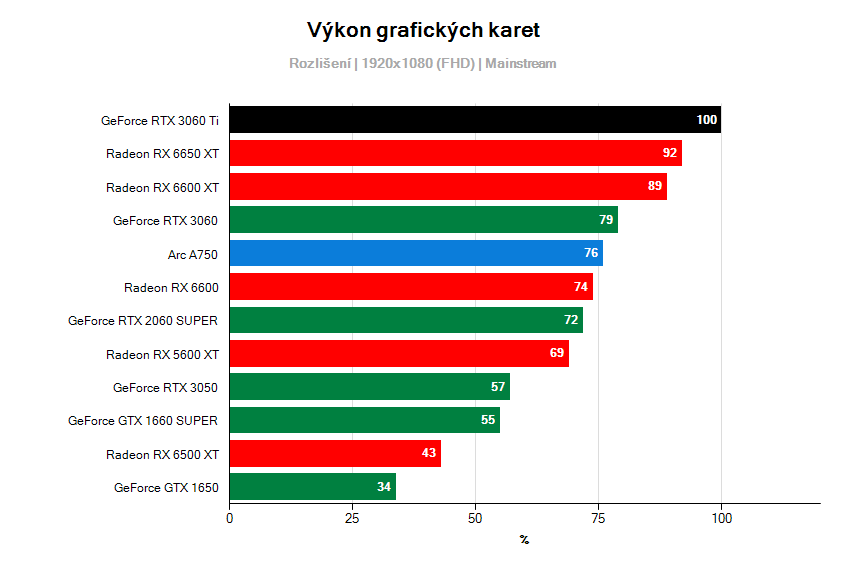

Hrani Her
grafická karta je jednou z hlavních součástí herního počítače.
Hráč počítačových her potřebuje
mít ve
hře co nejvíce snímků za sekundu což zajišťuje hlavně grafická karta.
čím vyšší výkon grafické karty, tím vyšší počet snímků za sekundu.
Porovnání AMD a NVIDIA ve hrách
AMD vs. NVIDIA. Věčný boj, kterému lidé ozbrojení klávesnicí věnují nejen dlouhé večery, ale i značnou část svého života. A leckdy to končí i násilnou smrtí.dnes však nikoho zabíjet nebudeme a podíváme se na celou problematiku z širšího spektra, objektivně a tak, abyste nikoho nemuseli zabíjet ani vy a svůj drahocenný čas věnovali něčemu smysluplnějšímu. Porovnáme grafické karty od AMD a od NVIDIE co do technologií i co do výkonu. AMD, nebo NVIDIA?
